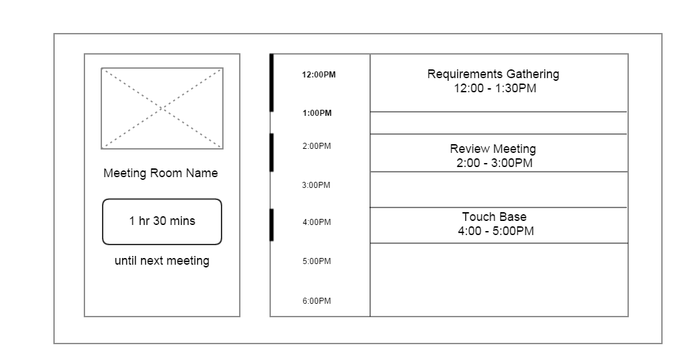
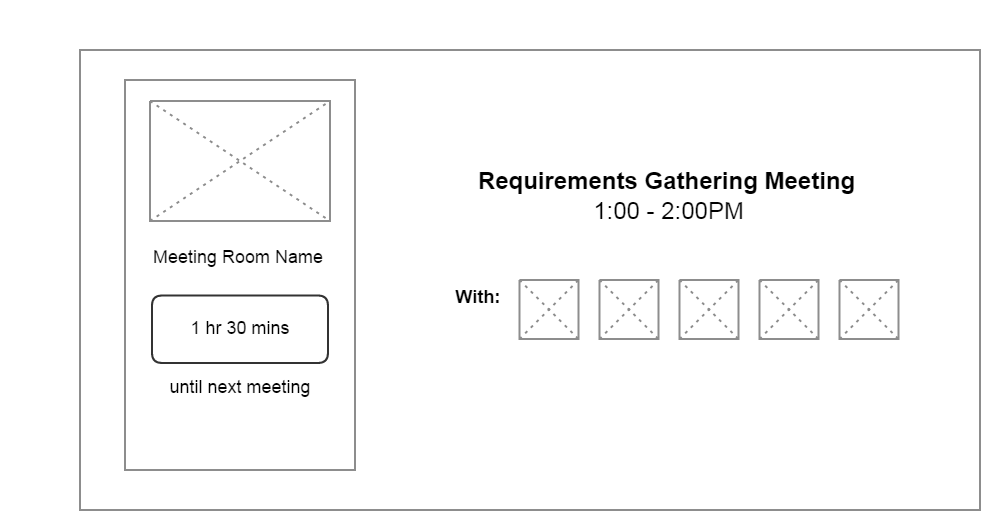
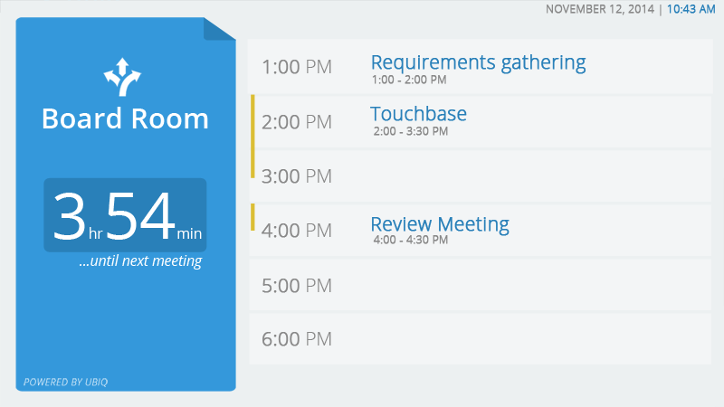
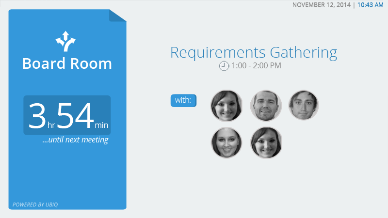
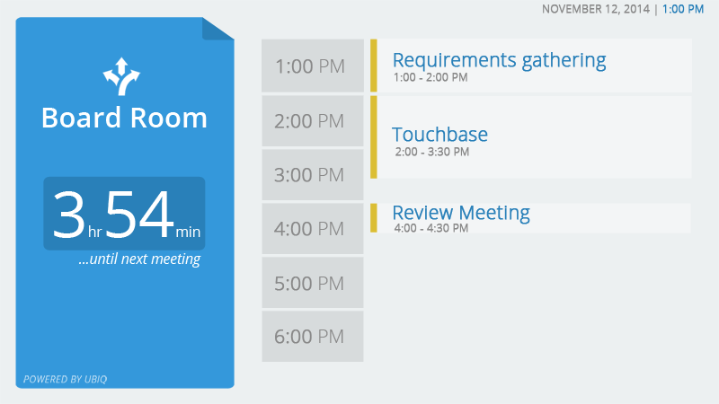
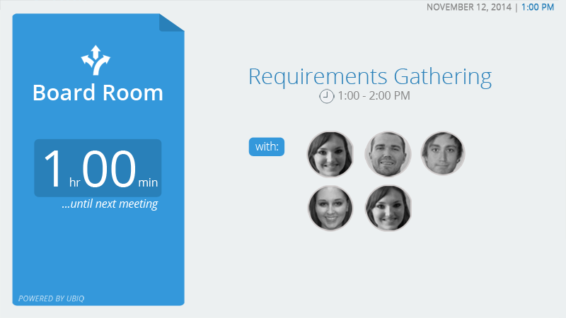
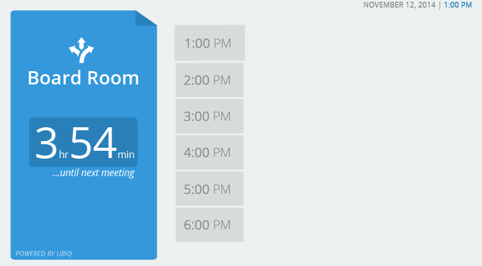

I had the privilege of working at my first start-up company based in Waterloo called
Ubiq. Ubiq's business model is about making presentations in the meeting room run as seamless as possible, eliminating the use of all wires in the room and having your presentation boot-up within seconds. In a small team of 3 (including myself) at the time, I helped with the first and second iterations of UI designs for the home screen that would be displayed on monitors in meeting rooms.
Challenges
Working on this project seemed simple at first, but proved to be challenging nonetheless!
In my first iteration of the UI, I had to think of two displays: one that would show the schedule of meetings for the entire day when there is a meeting that is
not in progress, and the other that would show a list of people attending the meeting while the meeting
is in progress. For the first display, I thought it would be best for the schedule to be displayed in a tabular format.
Below are the wireframes for the first iteration of the UI.


Initially, I wanted the bar on the left side of the timings to represent the duration of each meeting. Made sense, but the positioning of the bar was off and overall it made it look disconnected from tabular arrangement.
When meeting is not in progress
Meeting in progress
Second Iteration
Here's where we decided to change things up a bit. Since there was only
one row designated for displaying information about each meeting in the first iteration, we opted from the table type arrangement of the meeting schedule and converted the timings and the meeting names to blocks that can be adjusted in size.


Result
Of course, no product is perfect no matter how many iterations you make. We continued to make changes as the requirements changed along the way. But for now, here's a sneakpeek of the design and how the transitions worked after the second iteration.
